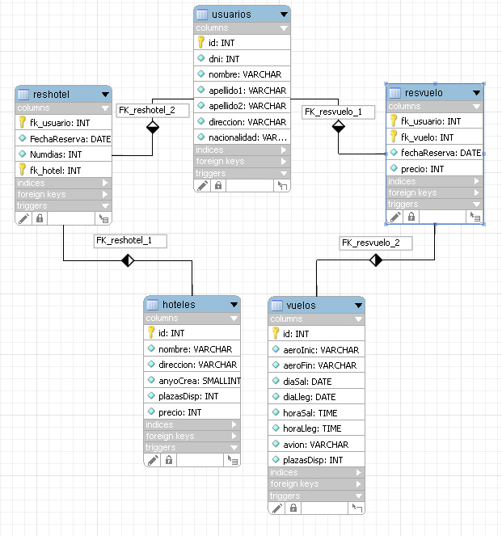

Ejercicios de introducción a JDBC
Base de datos a usar
Para los primeros ejercicios vamos a utilizar el SGBD MySQL. Descargaros el fichero comprimido con las plantillas de la sesión. La BD está disponible en el proyecto de Eclipse. Es un fichero de texto con los comandos SQL para generar la BD. Para crear la BD ejecutáis la tarea Ant initBD, que se encuentra en la carpeta db. Es una base de datos muy sencilla donde tenemos usuarios de una agencia de viajes y los vuelos disponibles. También se mantendrá los datos de quién ha reservado un vuelo. La estructura de la BD es la siguiente:

Conexión con la base de datos y consulta simple
El primer ejercicio consiste en realizar una conexión a la BD y mostrar los datos de una consulta sencilla. Para ello debéis descargaros la plantilla de la sesión. Es un proyecto para Eclipse que contiene el driver para MySQL.
Lo primero es obtener una conexión (en el constructor de la clase). Luego váis a realizar un método (listaVuelos) que realice un listado de todos los vuelos con toda su información. Finalizaréis con el cierre de la conexión. Nota: para obtener la fecha llamad a getDate y para la hora getTime.
Movimiento por el ResultSet y actualización
Vamos a realizar un ejercicio para ver cómo nos podemos mover por el ResultSet. Para ello, realizaremos un menú que permita consultar hoteles, nos muestre los datos de un hotel y nos permita movernos por la lista de hoteles. El método a implementar es consultaHoteles. El menú ya está implementado, simplemente tenéis que crear las sentencias y llamar a los métodos correspondientes. Una de las opciones permite descontar una plaza disponible.
Para poder moveros por el ResultSet tenéis que crear la sentencia como ResultSet.TYPE_SCROLL_INSENSITIVE y ResultSet.CONCUR_READ_ONLY. El tipo de consulta SENSITIVE no funciona en la versión actual de MySQL o del driver. Para la parte de actualización, tenéis que hacer que el tipo de concurrencia sea ResultSet.CONCUR_UPDATABLE.
Actualización de la base de datos
Vamos a realizar un ejercicio donde actualicemos la BD. Hay que realizar un método, int actualizaEuros(), que cambiará el valor en el campo precio de la tabla hoteles convirtiéndolo a euros. Para ello, primero tenéis que convertir la columna precio en real y luego realizar la conversión. Podéis usar los siguientes comandos SQL:
- alter table hoteles change precio precio double(10,3)
- update hoteles set precio = precio/166.386
El método devolverá los registros que se han visto afectados y se mostrarán por la salida estándar.
Optativos
Como parte optativa se proponen dos ejercicios: en el primero se trata de mostar un listado de usuarios y permitir modificar todos los datos de un usuario en concreto; en el segundo se añadirá una opción para borrar un usuario, usando deleteRow;